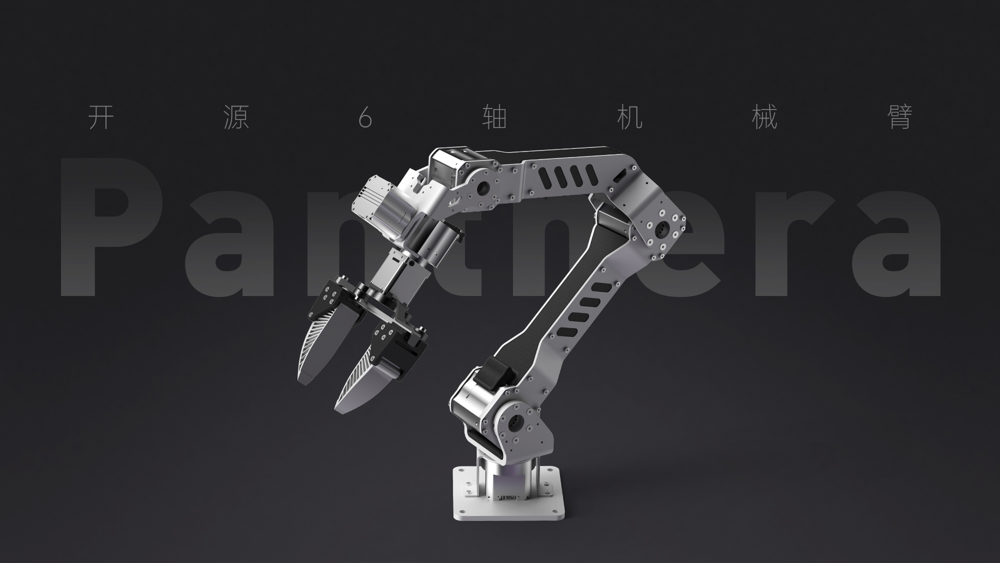

About Me
I am Zhangzheng Tu, an undergraduate student in Artificial Intelligence at the School of Future Technology, Dalian University of Technology.
My current interests focus on embodied AI, multimodal foundation models, Vision-Language-Action, robot learning, and long-term memory mechanisms. I am particularly interested in building intelligent agents that can perceive, remember, plan, and act in open-world physical environments.
I am always happy to connect with researchers, students, and collaborators working on embodied intelligence, robotics, and multimodal learning. You can also view my CV here.
News
- 2026.06🎉 Our paper Visual-Textual Information-Driven Tactile Data Generation Method was accepted by IEEE Transactions on Image Processing.
- 2026.06🎉 EventVLA: Event-Driven Visual Evidence Memory for Long-Horizon Vision-Language-Action Policies was released as a preprint, project page, and code.
- 2025.11🎉 Won the Merit Award at the Shenzhen Dexterous Hand Competition with the team Feng Ling Yue Ying.
- 2025.10🎉 Won National First Prize at RoboCup Advanced Vision Competition.
- 2025.08🎉 Won National First Prize at the RAICOM Robotics Developer Competition.
- 2024.08🎉 Won National Second Prize at the RAICOM Robotics Developer Competition.
- 2024.04🎉 Won National Third Prize at RoboCup.
Education

Dalian University of Technology
B.Eng. in Artificial Intelligence, School of Future Technology
2023.09 - Present
Research Experience

ScaleLab, Shanghai Jiao Tong University
Research Intern, Robot Memory and Embodied Intelligence
2025.12 - Present
Research Intern, Human Motion Reconstruction and Humanoid Retargeting
2025.10 - 2025.12
IIAU Lab, Dalian University of Technology
Undergraduate Researcher, Vision-Tactile Generation and Multimodal Learning
2024.12 - 2025.8
Publications
Open-source Projects

Panthera-HT:An open-source six-axis robotic arm platform for robot learning development.
Contributed to LeRobot framework integration and related robotics system adaptation for embodied intelligence workflows.
Competition Awards
2025
🥇 RAICOM Robotics Developer Competition, National First Prize
2025
🥇 RoboCup Advanced Vision Competition, National First Prize
2025
🥈 China University Intelligent Robot Creativity Competition, National Second Prize
2025
🥈 China Robot and Artificial Intelligence Competition, National Second Prize
2024
🥈 RAICOM Robotics Developer Competition, National Second Prize
2024
🥈 China International College Students' Innovation Competition, Silver Award
Honors
2025
🏆 DUT Outstanding Merit Student; Academic Excellence, Science and Innovation, and Social Practice Scholarships; Beike Scholarship
2024
🏆 DUT Outstanding Merit Student; Academic Excellence, Science and Innovation, Social Practice, and Spiritual Civilization Scholarships; Jiayang Technology Scholarship(10000￥)
Visitor Map
Global visitor distribution